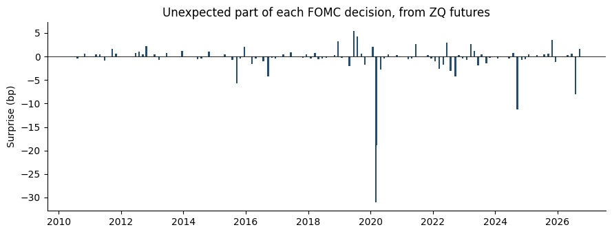
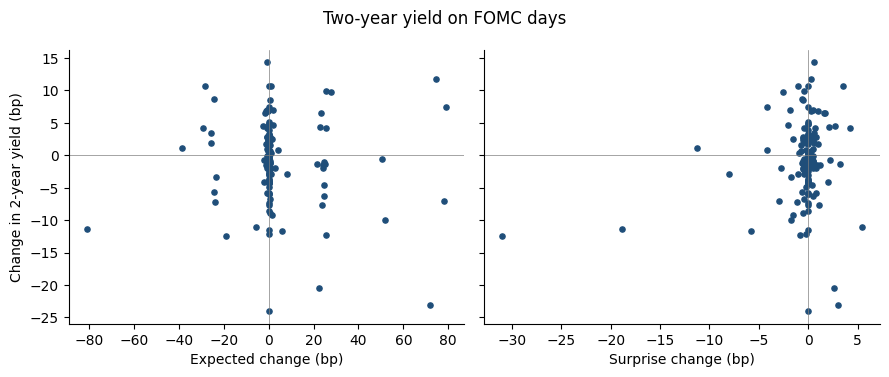

03. Expected and Unexpected Rate Changes (Kuttner 2001)#
Notebook 02 used one day’s ZQ prices to ask what the market expects the FOMC to do. This notebook turns the question around: on the day the FOMC announces, how much of its decision was news?
Kuttner (2001) splits each change in the fed funds target into an expected part and a surprise, using the one-day change in fed funds futures, and asks which part moves Treasury yields. If bond markets look ahead, the expected part is already in yields before the meeting, so yields should respond to the surprise and barely to the expected part. His sample covers 1989 to 2000. Here we apply the same measure to every FOMC announcement since June 2010, the start of Databento’s CME Globex history.
The computation lives in src/calc_kuttner_surprises.py and runs as the
calc_kuttner doit task; this notebook loads its output.
Measuring the surprise#
The current-month ZQ contract settles at 100 minus the month’s average fed funds rate, so \(f = 100 - P\) is the market’s forecast of that average. If the decision is announced on day \(d\) of a \(D\)-day month, the new rate is in force for the remaining \(D - d\) days. An unexpected change of \(x\) moves the monthly average by \(x \cdot (D-d)/D\), so the surprise is
The expected part is whatever is left of the actual change in the target: \(\Delta r^e = \Delta \bar r - \Delta r^u\).
Two details:
Late in the month \(D/(D-d)\) is large and multiplies any noise in the price. For announcements in the last seven days of a month, we use the change in the next month’s contract, which the decision affects for the whole month, with no scaling.
Databento’s daily bars cover UTC days, so the close on announcement day is a trade from the evening, after the 2 p.m. ET statement, and the previous bar’s close is from before it. The Sunday-evening Globex session has its own bar, which is how the Sunday, March 15, 2020 cut is measured.
import matplotlib.pyplot as plt
import pandas as pd
from calc_kuttner_surprises import load_kuttner_events, load_kuttner_regressions
events = load_kuttner_events()
regressions = load_kuttner_regressions()
print(
f"{len(events)} announcements, "
f"{events['announcement_date'].min():%B %Y} to {events['announcement_date'].max():%B %Y}; "
f"{(events['target_change'] != 0).sum()} changed the target"
)
132 announcements, June 2010 to September 2026; 32 changed the target
Every target change since 2010#
The table lists the announcements that moved the target range, all in
basis points. delta_f is the one-day change in the contract’s implied
rate and scale is \(D/(D-d)\) (1 when the next month’s contract is used).
cols = [
"announcement_date",
"contract_month",
"scale",
"delta_f",
"target_change",
"surprise",
"expected",
]
changes = events.loc[events["target_change"] != 0, cols]
changes.style.format(
{
"announcement_date": "{:%Y-%m-%d}",
"scale": "{:.2f}",
"delta_f": "{:.1f}",
"target_change": "{:.0f}",
"surprise": "{:.1f}",
"expected": "{:.1f}",
}
).hide(axis="index")
| announcement_date | contract_month | scale | delta_f | target_change | surprise | expected |
|---|---|---|---|---|---|---|
| 2015-12-16 | 2015-12 | 2.07 | 1.0 | 25 | 2.1 | 22.9 |
| 2016-12-14 | 2016-12 | 1.82 | -0.2 | 25 | -0.5 | 25.5 |
| 2017-03-15 | 2017-03 | 1.94 | 0.2 | 25 | 0.5 | 24.5 |
| 2017-06-14 | 2017-06 | 1.88 | 0.5 | 25 | 0.9 | 24.1 |
| 2017-12-13 | 2017-12 | 1.72 | 0.2 | 25 | 0.4 | 24.6 |
| 2018-03-21 | 2018-03 | 3.10 | 0.2 | 25 | 0.8 | 24.2 |
| 2018-06-13 | 2018-06 | 1.76 | -0.3 | 25 | -0.4 | 25.4 |
| 2018-09-26 | 2018-10 | 1.00 | -0.0 | 25 | -0.0 | 25.0 |
| 2018-12-19 | 2018-12 | 2.58 | 1.3 | 25 | 3.2 | 21.8 |
| 2019-07-31 | 2019-08 | 1.00 | 4.3 | -25 | 4.3 | -29.3 |
| 2019-09-18 | 2019-09 | 2.50 | 0.3 | -25 | 0.6 | -25.6 |
| 2019-10-30 | 2019-11 | 1.00 | -1.8 | -25 | -1.8 | -23.2 |
| 2020-03-03 | 2020-03 | 1.11 | -28.0 | -50 | -31.0 | -19.0 |
| 2020-03-15 | 2020-03 | 1.94 | -9.7 | -100 | -18.9 | -81.1 |
| 2022-03-16 | 2022-03 | 2.07 | -1.3 | 25 | -2.6 | 27.6 |
| 2022-05-04 | 2022-05 | 1.15 | -1.5 | 50 | -1.7 | 51.7 |
| 2022-06-15 | 2022-06 | 2.00 | 1.5 | 75 | 3.0 | 72.0 |
| 2022-07-27 | 2022-08 | 1.00 | -3.0 | 75 | -3.0 | 78.0 |
| 2022-09-21 | 2022-09 | 3.33 | -1.2 | 75 | -4.2 | 79.2 |
| 2022-11-02 | 2022-11 | 1.07 | 0.2 | 75 | 0.3 | 74.7 |
| 2022-12-14 | 2022-12 | 1.82 | -0.2 | 50 | -0.5 | 50.5 |
| 2023-02-01 | 2023-02 | 1.04 | -0.7 | 25 | -0.8 | 25.8 |
| 2023-03-22 | 2023-03 | 3.44 | 0.7 | 25 | 2.6 | 22.4 |
| 2023-05-03 | 2023-05 | 1.11 | 1.0 | 25 | 1.1 | 23.9 |
| 2023-07-26 | 2023-08 | 1.00 | 0.5 | 25 | 0.5 | 24.5 |
| 2024-09-18 | 2024-09 | 2.50 | -4.5 | -50 | -11.3 | -38.7 |
| 2024-11-07 | 2024-11 | 1.30 | -0.5 | -25 | -0.7 | -24.3 |
| 2024-12-18 | 2024-12 | 2.38 | -0.3 | -25 | -0.6 | -24.4 |
| 2025-09-17 | 2025-09 | 2.31 | 0.2 | -25 | 0.6 | -25.6 |
| 2025-10-29 | 2025-11 | 1.00 | 3.5 | -25 | 3.5 | -28.5 |
| 2025-12-10 | 2025-12 | 1.48 | -0.8 | -25 | -1.1 | -23.9 |
| 2026-09-16 | 2026-09 | 2.14 | 0.8 | 25 | 1.6 | 23.4 |
Most moves were almost fully expected. The surprise is a few basis points at most, except the two emergency cuts of March 2020 and the 50 bp cut of September 2024. The expected part of that cut, about 39 bp, says the market saw it as a close call between 25 and 50 bp.
fig, ax = plt.subplots(figsize=(9, 3.5))
ax.bar(events["announcement_date"], events["surprise"], width=20, color="#1f4e79")
ax.axhline(0, color="black", linewidth=0.6)
ax.set_ylabel("Surprise (bp)")
ax.set_title("Unexpected part of each FOMC decision, from ZQ futures")
for spine in ["top", "right"]:
ax.spines[spine].set_visible(False)
fig.tight_layout()

How Treasury yields respond#
For each GSW zero-coupon maturity we regress the one-day yield change on the target change, and then on its two parts:
Standard errors are heteroskedasticity-robust (HC1). The table reports the slopes with \(t\)-statistics in parentheses, for every announcement and without the two March 2020 emergency cuts, which came in the middle of a market crash.
slopes = regressions[regressions["regressor"] != "const"].copy()
slopes["cell"] = slopes.apply(lambda r: f"{r['coef']:.2f} ({r['t']:.1f})", axis=1)
table = slopes.pivot_table(
index=["sample", "spec", "regressor"],
columns="maturity",
values="cell",
aggfunc="first",
)
table.columns = [f"{n}y" for n in table.columns]
nobs = regressions.groupby("sample")["nobs"].first()
print(nobs.to_string())
table
sample
all 132
excl_march_2020 130
| 1y | 2y | 5y | 10y | 30y | |||
|---|---|---|---|---|---|---|---|
| sample | spec | regressor | |||||
| all | decomposed | expected | -0.05 (-1.7) | -0.03 (-0.6) | -0.06 (-1.4) | -0.03 (-0.8) | -0.04 (-0.8) |
| surprise | 0.38 (3.8) | 0.34 (2.7) | 0.44 (2.3) | 0.33 (1.7) | 0.20 (0.7) | ||
| target | target_change | -0.02 (-0.6) | -0.00 (-0.1) | -0.03 (-0.5) | -0.00 (-0.0) | -0.02 (-0.4) | |
| excl_march_2020 | decomposed | expected | -0.05 (-1.6) | -0.05 (-0.9) | -0.09 (-2.5) | -0.06 (-2.3) | -0.08 (-2.8) |
| surprise | 0.13 (0.6) | -0.09 (-0.3) | -0.12 (-0.4) | -0.21 (-0.9) | -0.38 (-1.3) | ||
| target | target_change | -0.05 (-1.6) | -0.05 (-0.9) | -0.09 (-2.4) | -0.06 (-2.3) | -0.09 (-3.0) |
With every announcement included, yields respond to the surprise: about a third of a basis point per basis point of surprise, significant out to five years and smaller at 30 years. The expected part has no significant effect, as Kuttner found.
That result rests on the two March 2020 cuts. Without them, the surprise has no significant effect at any maturity, and the expected part has a small negative slope at five years and beyond: long yields fell slightly, on average, on days the Fed delivered an expected hike. An expected hike carries no news about the current rate, so whatever moved long yields on those days was other news in the statement.
Outside March 2020, target surprises since 2010 have a standard deviation of about 2 bp. The Fed now signals its moves in advance, so the news in a statement is mostly about the future path of rates rather than the current decision. This is the second factor in Gürkaynak, Sack, and Swanson (2005), and a one-day change in the current-month contract does not capture it.
fig, axes = plt.subplots(1, 2, figsize=(9, 3.8), sharey=True)
for ax, part in zip(axes, ["expected", "surprise"]):
ax.scatter(events[part], events["dy_2y"], s=14, color="#1f4e79")
ax.axhline(0, color="grey", linewidth=0.5)
ax.axvline(0, color="grey", linewidth=0.5)
ax.set_xlabel(f"{part.capitalize()} change (bp)")
for spine in ["top", "right"]:
ax.spines[spine].set_visible(False)
axes[0].set_ylabel("Change in 2-year yield (bp)")
fig.suptitle("Two-year yield on FOMC days")
fig.tight_layout()
